AI Academy · Level 4 · Grade 9 · Week 10 · Student lesson
Baselines First
Learn to understand, design, build, test and explain AI systems responsibly.
Project: Responsible Plant Classifier
Before you start
AI-2 Week 12: compute rates using the relevant total.
Plan time to read, investigate and explain. Keep predictions separate from observations.
Student lesson · 1 of 17
Your mission
Your learning target
I can fit a majority label baseline using training labels only.
I can score fixed predictions on the same validation examples.
I can explain what a baseline comparison does and does not establish.
Remember before reading
Close your notes first. A rough first answer helps us choose the right starting point; it is not a score for your ability.
Without opening the old lesson, explain one key idea from Dataset Cards. Give an example and a mistake that the idea helps you avoid.
Without opening the old lesson, explain one key idea from Sampling and Intended Use. Give an example and a mistake that the idea helps you avoid.
Without opening the old lesson, explain one key idea from Python and Table Readiness. Give an example and a mistake that the idea helps you avoid.
After trying, check the relevant lesson or ask your teacher. Change the part of your explanation that the evidence shows was wrong.
A model must be compared with a simple transparent strategy on the same untouched examples.
Builder name and experiment date:
Readiness for the connected explanation
Why should frames from the same trip stay in one set when evaluating on new trips?
This week’s end goal
By the end, I can explain baselines first using a traced example and a stated limitation.
Student lesson · 2 of 17
Notice the evidence
PICTURE ENTRY
Notice → Predict → Explain
Begin with visible evidence; do not explain more than the picture and information support.
Name three visible details without interpreting them.
Predict the data, model, or evaluation decision being made.
Identify one hidden assumption that could change the result.
State what evidence would confirm or reject your prediction.
My prediction and supporting evidence:
A closer explanation
A learner reports that a classifier gets 80 percent correct. Is that useful? We need to know the task, the examples and what a simple method achieves on those same examples. A baseline is a reference method. This week our baseline ignores each scene and always predicts the label that is most common in the training set.
Use a new teacher-authored fictional dataset for predicting clear or blocked lanes. Each listed row describes one frame from a different trip on a familiar route; training and validation trips do not overlap. This is a new practice set, not the twelve-frame table from Week 6. All supplied labels have been resolved under the classroom rule. There are no review cases in this exercise, and no real navigation claim is made.
| Set | Labels in row order | Use |
|---|---|---|
| Training | clear clear blocked clear blocked clear | Choose the constant label |
| Validation | blocked clear blocked clear | Score the fixed predictions |
| Final test | Not supplied in this exercise | Keep for later final evaluation |
The training counts are four clear and two blocked. Our stated method therefore predicts clear for every new example. A baseline can still learn a value from training data; simple does not mean it uses no data. If the two training counts tie, our rule chooses clear, declared before scoring.
Student lesson · 3 of 17
See how it works
ML MECHANISM
Input → Model → Evidence
Trace the information, fitted behavior, and evaluation proof separately.
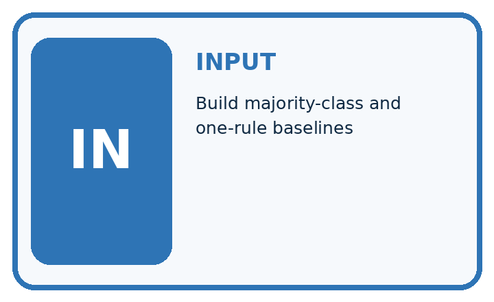
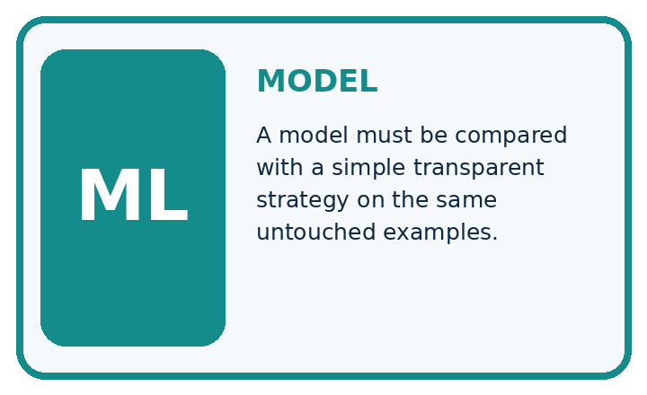
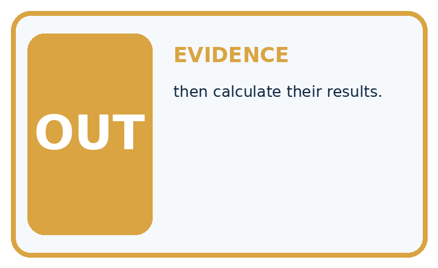
QUESTION Build majority-class and one-rule baselines, then calculate their results.
MODEL IDEA A model must be compared with a simple transparent strategy on the same untouched examples.
PROOF NEEDED Use an unseen case, visible calculation, error analysis, and a stated limitation.
Draw a fresh data → model → prediction → evaluation trace:
A closer explanation
train = ["clear", "clear", "blocked",
"clear", "blocked", "clear"]
valid = ["blocked", "clear", "blocked", "clear"]
prediction = "clear"
if train.count("blocked") > train.count("clear"):
prediction = "blocked"
correct = 0
for label in valid:
if prediction == label:
correct = correct + 1
print(prediction, correct, len(valid))The output is clear 2 4. The fixed prediction matches two of the four validation labels, so accuracy is 2/4 or 50 percent. The training majority share, 4/6, is not the validation accuracy. The baseline does not inspect the validation labels to decide which constant to predict.
Keep fitting separate from scoring
The code assumes nonempty training data with only clear and blocked labels. It counts matches on the supplied validation list; a percentage also requires a nonempty validation set. Do not run it on empty training data and describe the default clear value as learned evidence. Other labels and unresolved review statuses need an explicit policy.
Connect the picture and the explanation
Point to the input, the deciding step and the result in this week’s visual. Explain the same step in ordinary words. A picture helps when you can say what each part represents.
Student lesson · 4 of 17
Compare the cases
EVALUATION DESIGN
Four Tests, Four Kinds of Evidence
A system is not understood until it survives more than one comfortable example.
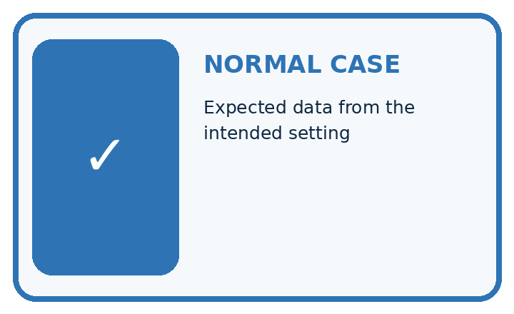
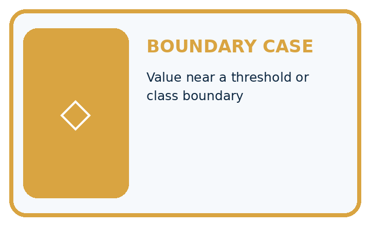
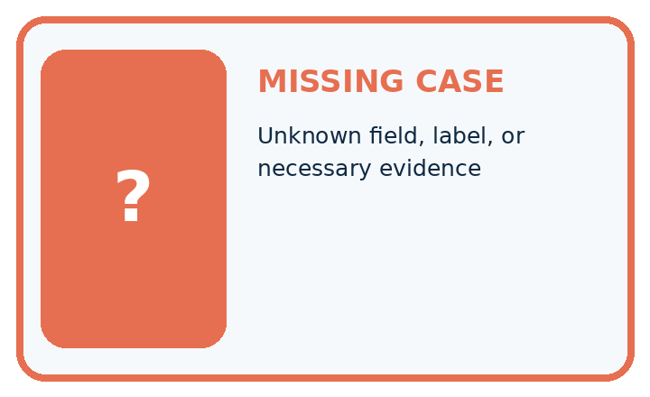
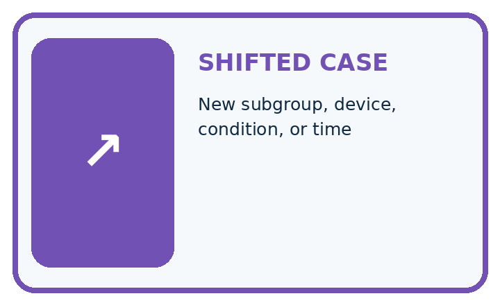
NORMAL Expected data and expected behavior.
BOUNDARY Value close to a threshold, ambiguous label, or uncertain prediction.
MISSING Necessary field, label, source, or measurement is unavailable.
SHIFTED New lighting, species, device, subgroup, or time condition.
Which case most threatens today's claim, and why?
Change one thing in the pictured case
Change: Change the third candidate prediction from spotted to healthy.
Prediction: Candidate becomes correct on all 4 validation cases.
Reason: Only the previously wrong third decision changes; baseline stays fixed at 2/4.
Student lesson · 5 of 17
Words that unlock the idea
VOCABULARY
Words You Can Calculate and Defend
A definition matters when it lets you interpret a new dataset, model, or result.
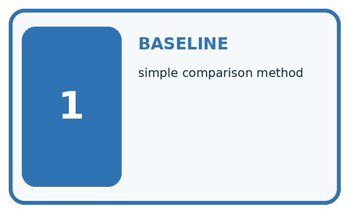
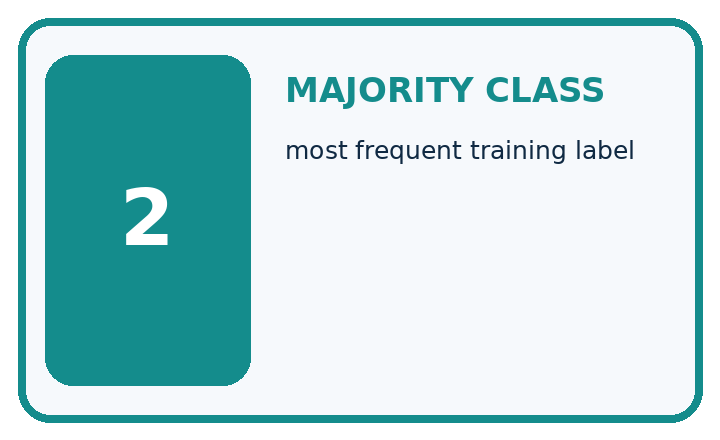
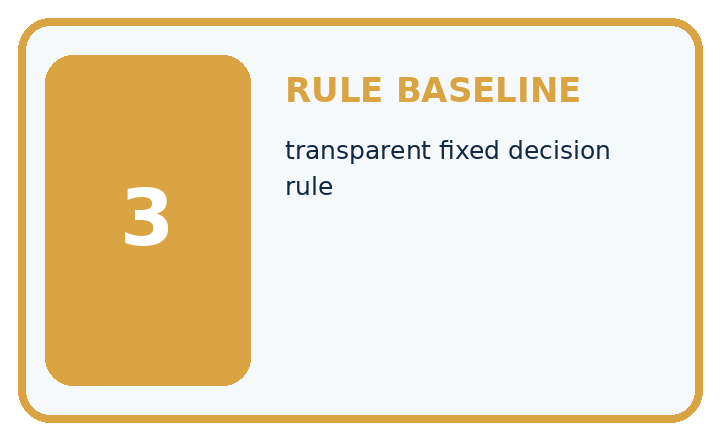
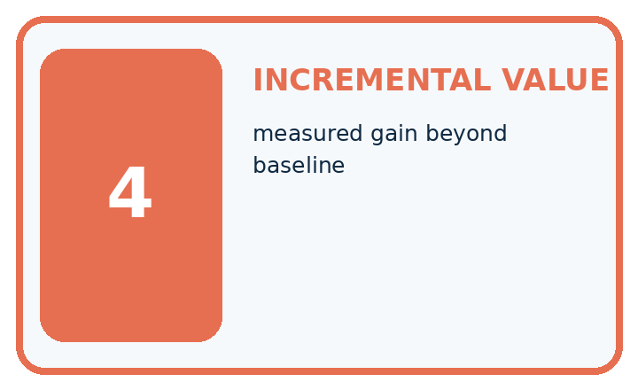
| Term | Precise meaning | My ML example |
|---|---|---|
| baseline | simple comparison method | |
| majority class | most frequent training label | |
| rule baseline | transparent fixed decision rule | |
| incremental value | measured gain beyond baseline |
Repair the claim using a definition, calculation, or test record:
Words used in the closer explanation
| Word | Meaning |
|---|---|
| Baseline | A simple reference method used to judge a more complex approach |
| Majority label | The label with more examples than the other label in this binary task |
| Accuracy | Correct predictions divided by the number of scored examples |
| Percentage point | A unit for the difference between two percentages |
Student lesson · 6 of 17
Follow a worked example
WORKED EVIDENCE
Reason Step by Step
Predict first. Then check each step. A correct answer without visible evidence cannot be audited.
Four-step worked evidence for Week 10: Baselines First
STEP 1 Test set has 12 healthy and 8 spotted leaves.
STEP 2 Always-healthy baseline gets 12 ÷ 20 = 60% accuracy but 0% spotted recall.
STEP 3 On the same 20 leaves, the visible-spot rule correctly labels 5 spotted leaves, misses 3 spotted leaves, correctly labels 10 healthy leaves and falsely marks 2 healthy leaves as spotted. Accuracy=(5+10)/20=75%; spotted recall=5/8=62.5%.
STEP 4 A learned model must beat relevant baseline metrics—not only one convenient total.
Recalculate, retrace, or restate the evidence independently:
A closer explanation
Suppose a candidate method supplies blocked, clear, clear, clear for the four validation rows in the table. These are supplied predictions for a comparison exercise; we have not fitted that candidate. It gets three of four correct, or 75 percent. The baseline gets two of four, or 50 percent. The candidate is ahead by one correct example and 25 percentage points on this set.
Use identical row IDs, reference labels, exclusions and metric for both methods. Match predictions to their rows even if files are reordered. A score on easier examples is not a fair comparison. Neither this four-row result nor beating one baseline proves that the candidate will perform well on future trips.
Record training counts, the fixed prediction and tie rule, validation IDs and labels, prediction lists and correct/total counts. Keep the final test separate from development decisions. Next week we will search candidate rules using training evidence, then compare choices carefully.
Learn from the worked case
Cover the result before checking it. Say what is given, choose the procedure, and follow one step at a time. Then uncover the result and explain your first mismatch. Ask why a step is allowed, not only what number it produces.
A pictorial worked case: Baselines First
Make a simple baseline earn its place before claiming a better classifier.
The facts we will use
Training labels: healthy, healthy, spotted. Majority baseline predicts healthy. Validation references: healthy, spotted, healthy, spotted.
All inputs and outcomes in this worked example are invented classroom data; no real model run is claimed.
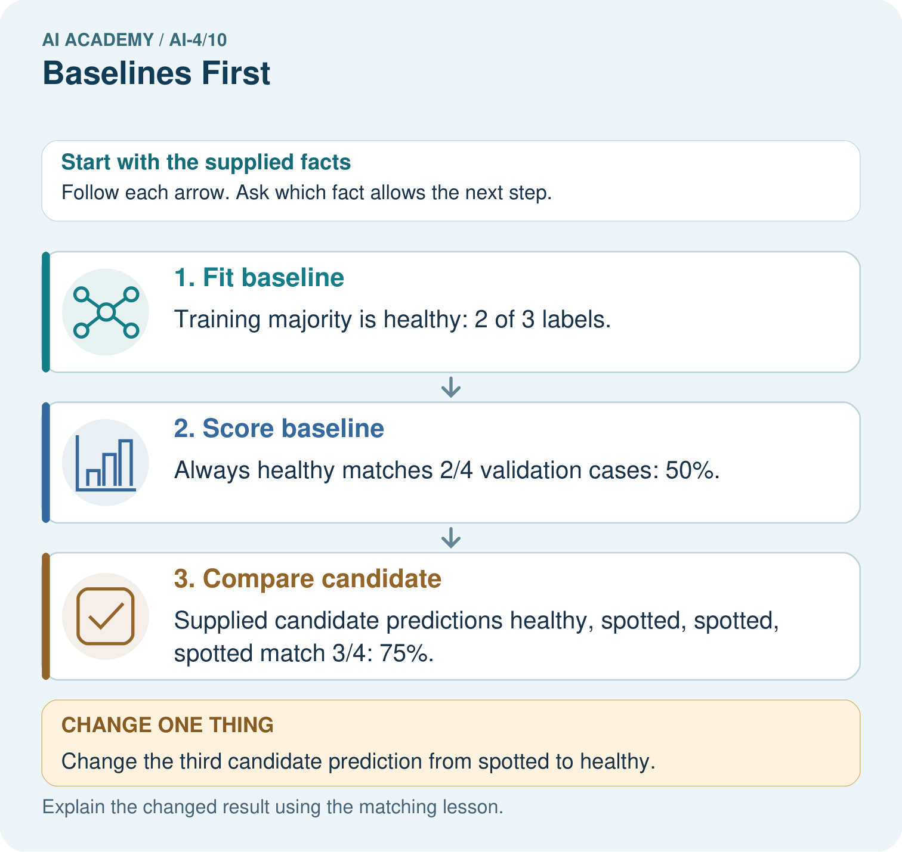
Read the picture one step at a time
Why this result follows
Read the picture in order. Supplied candidate predictions healthy, spotted, spotted, spotted match 3/4: 75%. The arrows show which recorded input or intermediate result each decision uses. Explain the deciding step aloud before checking the changed case; pointing to the final answer alone does not show how it follows.
What this example does not establish
These supplied predictions illustrate comparison. No actual model was trained, and four cases are limited evidence.
Read the labelled picture: Can the candidate’s training accuracy replace this validation comparison? Point to the relevant step in the picture, then write the changed result and the rule or evidence that supports it.
Change one thing: Change the third candidate prediction from spotted to healthy. Predict the result before checking the explanation. What remains the same?
Student lesson · 7 of 17
Find and repair a mistake
ERROR DETECTIVE
Compare → Diagnose → Repair
Do not patch the answer. Find the earliest unsupported assumption, data problem, or experiment error.
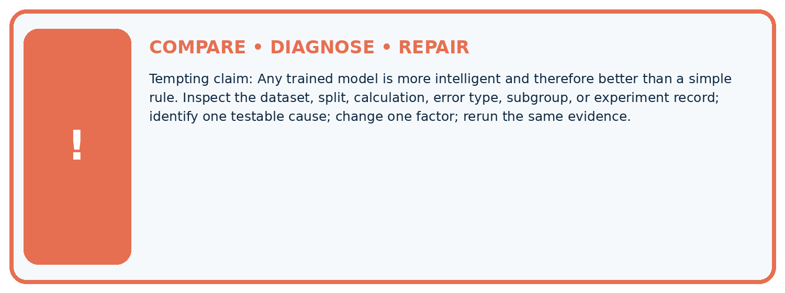
| Evidence record | Expected | Actual | Likely cause / next test |
|---|---|---|---|
| normal case | passes | ||
| boundary case | defined behavior | ||
| missing case | safe fallback | ||
| shifted case | measured limit |
Diagnose one cause and name the cleanest next experiment:
A closer explanation
Imagine ten validation cases with nine clear and one blocked, while the training-derived constant is clear. The baseline gets 9/10 or 90 percent accuracy but misses the only blocked case. Overall accuracy counts all rows equally; it does not describe every kind of error or its consequences. Later weeks will examine those errors in detail.
A majority baseline is a useful first comparison, not a guarantee of the best simple method. It can be weak when validation label proportions differ from training. Keep the declared baseline, report what happened and consider other justified reference methods during development. Do not tune a final test result into a better-looking claim.
Student lesson · 8 of 17
Practise together
ML STUDIO
Specify Before You Run
A trustworthy result can be reproduced from the recorded data, code, settings, and evaluation rule.
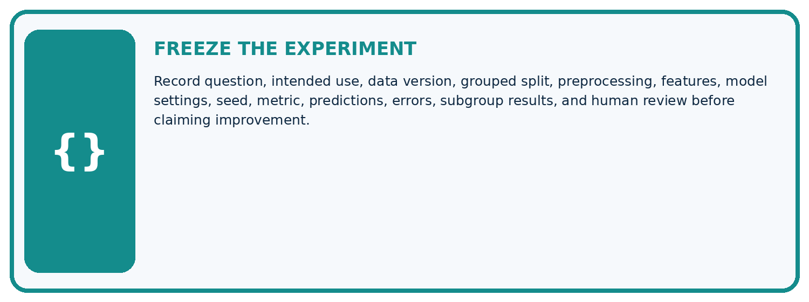
Experiment record
QUESTION + intended use + success threshold
DATA version + grouped split + leakage check
CODE/preprocessing + features + model + settings + seed
METRICS + positive class + units + denominators
PREDICTIONS + errors + subgroup slices + limitations
HUMAN reviewer + release, revise, limit, or stop decision
Write the minimum record needed to reproduce today's result:
A closer explanation
A learner sees that blocked is common in a new validation set and changes the baseline to always blocked. That is not the original training-majority baseline. Its parameter was selected from evaluation labels. Restore the training-derived constant for that comparison and document any separate method honestly.
Another learner compares a candidate on ten easy rows with a baseline on four difficult rows. The difference could come from the examples. Score both on the same intended set with the same treatment of missing predictions and unresolved labels; report exclusions rather than silently dropping mistakes.
Practise with less help: Calculate the validation score
Use workbook W2 for the connected example “A baseline before a model”. First fill the input and rule boxes. Try the middle steps before asking for a hint. After a hint, try the next step yourself.
| Plan | Do | Check |
|---|---|---|
| What is given? Which rule or procedure applies? | Record each intermediate step. | Does the result follow? What remains unknown? |
Explain your trace to a partner. Your partner points to one step to check. Swap roles on the next case. Each person writes their own explanation.
Check your reasoning
Use the worked case for A baseline before a model. Proposed explanation: “A simple baseline does not need training data”. Decide whether this explanation is supported. Point to the step or supplied fact that decides; explain your repair if needed.
Answer on your own before discussion. If you are unsure, say which step you need help with.
Explain the picture
Can the candidate’s training accuracy replace this validation comparison? Point to the relevant step in the picture, then write the changed result and the rule or evidence that supports it.
This is supported practice. Keep the separately named independent case for an attempt before feedback.
Student lesson · 9 of 17
Run the investigation
EVIDENCE LAB
Predict → Run → Calculate → Interpret
Keep the test conditions fixed, record every result, and change only one planned factor.
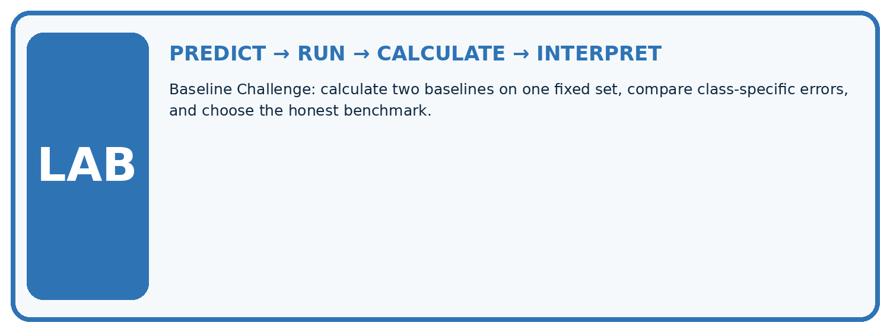
1. Write the hypothesis and expected evidence before running.
2. Baseline Challenge: calculate two baselines on one fixed set, compare class-specific errors, and choose the honest benchmark.
3. Run one normal, one boundary, one missing, and one shifted case.
4. Calculate the metric from raw counts or row-level errors.
5. Interpret what changed, what did not, and what remains unsafe or unknown.
| Case | Prediction | Actual | Calculation / evidence | Meaning / next test |
|---|---|---|---|---|
| Normal | ||||
| Boundary | ||||
| Missing | ||||
| Shifted |
Plan → try → check
Before trying: what do I expect, and why? While trying: which step could first go wrong? Afterwards: what did I actually observe, and what should change? Keep “not run” if you only traced the procedure.
Student lesson · 10 of 17
Build your understanding
MASTERY
From Knowing the Word to Owning the Idea
Move upward only when you can produce evidence without copying the example.
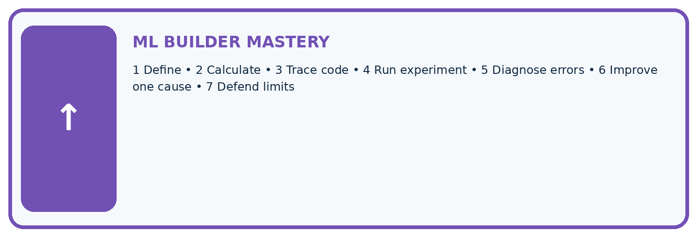
DEFINE Use all four terms precisely: baseline, majority class, rule baseline, incremental value.
CALCULATE Reproduce the worked evidence with units and denominator.
TRACE Explain the data, code or decision path.
DIAGNOSE Any trained model is more intelligent and therefore better than a simple rule.
TRANSFER Solve a fresh dataset or model case.
IMPROVE Change one cause and rerun fixed evidence.
DEFEND State intended use, metric, limitation, and human responsibility.
Student lesson · 11 of 17
Connect your project
CUMULATIVE PROJECT
Responsible Plant Classifier
Every week adds one reviewable artifact to the same evidence-based capstone.
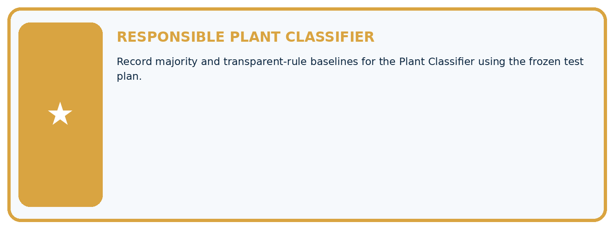
Which requirement or risk does this artifact address?
Which dataset, split, code, and metric version does it use?
What normal and shifted cases were tested?
What remains uncertain or weak?
What decision still belongs to a teacher or qualified human?
My evidence-linked project decision:
Evidence for your project
For your Responsible Plant Classifier, save the input, procedure, observed result and limitation of this check. Label this worked example as practice; use a different, previously unreviewed case when checking independent understanding.
Student lesson · 12 of 17
Show what you know
INDEPENDENT PROOF
Explain • Calculate • Transfer • Defend
Complete this with a fresh case after guided practice and compare it with the mastery criteria.
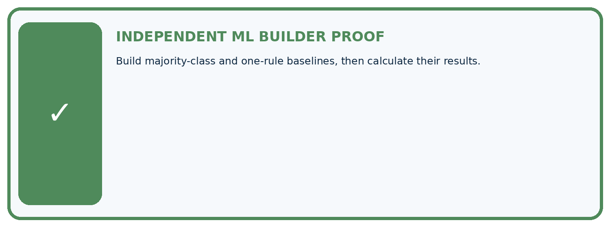
□ Define the task, feature/target roles, and intended-use boundary.
□ Show the calculation, code trace, or experiment record.
□ Test a normal case and one revealing boundary, missing, or shifted case.
□ Diagnose one failure without changing several factors at once.
□ Name a limitation, fairness concern, and the human-review action.
Independent evidence and defense:
My level: □ Not yet □ With one hint □ Independently □ I can teach and defend it
Student lesson · 13 of 17
Study a complete case
Week 10 Worked case
Use the supplied details to practise the weekly concept before attempting the independent question. This case extends the illustrated lesson.
The situation
A test set has eighteen healthy and two spotted leaves. Baseline always predicts healthy.
The question
Calculate and critique accuracy.
Worked explanation
18/20=90%, but spotted recall is 0/2=0%. Compare with task-relevant metrics and the trained model.
Explain it in your own words
Which detail supports the answer, and why does it matter?
Trace the supplied case visually
A majority baseline can miss every positive
| Evidence or stage | Value or result |
|---|---|
| Overall correct | 18/20 |
| Spotted found | 0/2 |
A test set has eighteen healthy and two spotted leaves. Baseline always predicts healthy.
Calculate and critique accuracy.
18/20=90%, but spotted recall is 0/2=0%. Compare with task-relevant metrics and the trained model.
Student lesson · 14 of 17
Try a new case independently
Independent case: Fit and compare independently
New training labels are blocked, clear, blocked, blocked, clear. New validation labels are clear, blocked, clear, blocked. Fit the same baseline rule and list its four predictions. A supplied candidate predicts clear, blocked, blocked, blocked. Score both on these rows and state the difference in correct examples and percentage points. What claim remains unsupported?
Attempt this case before feedback. Record any help. Earlier examples below are further practice; a case already practised with feedback cannot establish fresh transfer.
Week 10 Independent application
Close the worked explanation. Apply the idea to this different question without copying.
A dataset has 18 grass and 2 fern examples. A baseline always predicts grass. Compute accuracy and name a serious limitation.
My answer, with a trace, calculation or supporting evidence
Create and test
Change one relevant detail. Predict the result before testing. Include a boundary or missing-information case when it helps reveal a limit.
My changed input and expected result
Connect to your project
Record majority and transparent-rule baselines for the Plant Classifier using the frozen test plan.
The evidence I will keep
Your teacher has the independent answer and scoring criteria. Complete the matching workbook week to keep your practice evidence together.
Transfer practice from the original programme
A dataset contains 27 healthy and 3 spotted leaves. An always-healthy baseline gets what accuracy and spotted recall? What must a new model improve upon?
Use feedback to improve
Attempt the independent case before hints. Record whether you worked alone, used a hint or followed a model. After feedback, fix the first unsupported step and explain why it changed. A later check uses a changed case, not a copied answer.
Student lesson · 15 of 17
Your lesson route
Start with this question: Make a simple baseline earn its place before claiming a better classifier.
| By the end, I can | How I will show it |
|---|---|
| Fit a majority label baseline using training labels only | Explain the deciding step, show a trace or test, and state one limit. |
| Score fixed predictions on the same validation examples | Explain the deciding step, show a trace or test, and state one limit. |
| Explain what a baseline comparison does and does not establish | Explain the deciding step, show a trace or test, and state one limit. |
Remember → watch and explain → try with help → investigate → try independently → keep project evidence. Your teacher may spread this lesson across several classes.
Keep your first prediction. Compare it with what the evidence shows and explain any change.
Student lesson · 16 of 17
Finish and return
Close your notes. Explain this goal in your own words: Fit a majority label baseline using training labels only
If you are unsure, return to the worked picture and explain one arrow. If you are ready, change an input or assumption and justify your prediction.
Save your workbook evidence. At the next review, try a different case before opening your old answer.
Student lesson · 17 of 17
Supported practice, repair and portfolio
Use this supported practice once, in the browser or on paper. Keep the reserved independent assessment for a separate first attempt before teacher feedback.
Make a simple baseline earn its place before claiming a better classifier.
Practice 1: explain the deciding evidence
Which labelled step matches this detail? Supplied candidate predictions healthy, spotted, spotted, spotted match 3/4: 75%.
1. Fit baseline
2. Score baseline
3. Compare candidate
Hint if needed: Read the steps in the pictorial case. Match the supplied detail to the stage that performs or records it.
After your attempt, compare with the supported explanation: Compare candidate Supplied candidate predictions healthy, spotted, spotted, spotted match 3/4: 75%. Read the picture in order. Supplied candidate predictions healthy, spotted, spotted, spotted match 3/4: 75%. The arrows show which recorded input or intermediate result each decision uses. Explain the deciding step aloud before checking the changed case; pointing to the final answer alone does not show how it follows.
Practice 2: explain the deciding evidence
Changed-case practice: Change the third candidate prediction from spotted to healthy. Which conclusion is supported by the supplied facts?
1. Candidate becomes correct on all 4 validation cases.
2. We can decide the result without examining the changed input or the procedure.
3. This one example guarantees correct results for every future input.
Hint if needed: Use the changed condition and the deciding step in the pictorial trace. The answer must say what follows from those facts.
After your attempt, compare with the supported explanation: Candidate becomes correct on all 4 validation cases. Only the previously wrong third decision changes; baseline stays fixed at 2/4.
Repair a missing building block
Review Dataset Cards (ai-4/9). Goal: Inspect row meaning missing values and repeated records. Short practice: What two counts should the revised card show? Point to the relevant step in the picture, then write the changed result and the rule or evidence that supports it.. Return to this week and explain what you changed.
Review Sampling and Intended Use (ai-4/7). Goal: Inspect row meaning missing values and repeated records. Short practice: Which collection would address the intended-use gap most directly? Point to the relevant step in the picture, then write the changed result and the rule or evidence that supports it.. Return to this week and explain what you changed.
Review Python and Table Readiness (ai-4/4). Goal: Specify a table schema. Short practice: Why should the missing value not silently become zero? Point to the relevant step in the picture, then write the changed result and the rule or evidence that supports it.. Return to this week and explain what you changed.
Predict, run and debug
The browser lab lets you edit the supported Python examples already included in this lesson. Predict first, run, inspect the actual output or error, change one input, then run again. Keep code, predictions, actual results and a reasoned revision together. On paper, label your result as a trace rather than an execution.
Keep your completed work
Use Download completed work in the hosted lesson to export your answers, reflections, practice feedback and code-run evidence. Open the HTML copy to read or print it. Drafts stay in this browser when storage is available; clear drafts on a shared device.